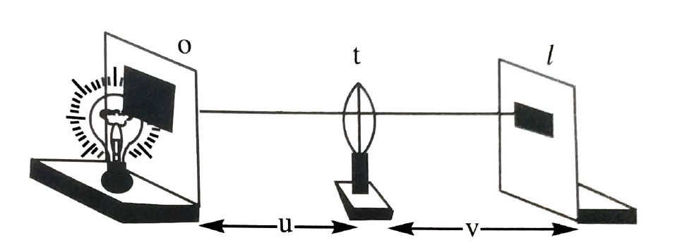
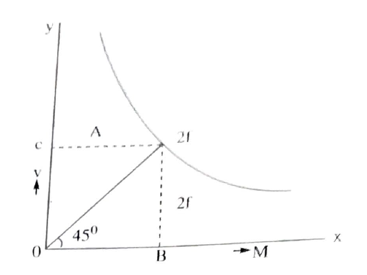
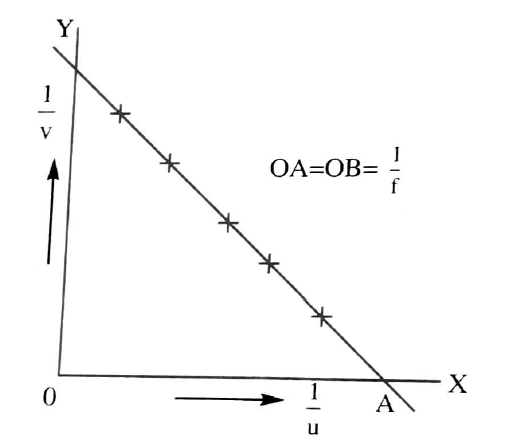
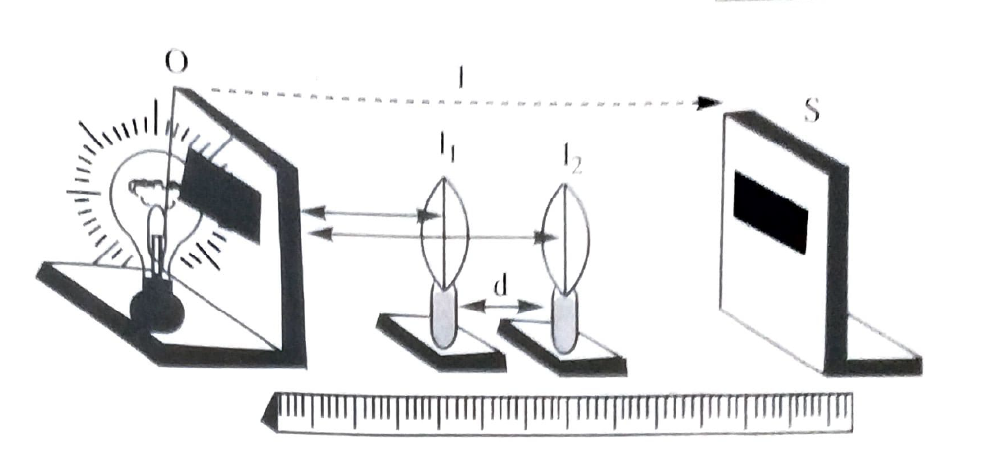

To determine the focal length of the convex lens.
Convex lens,optical bench,object,lens stand and screen.
a) Distant object method: The convex lens is mounted in the'V' groove of the lens stand with its principal axis horizontally.The lens is focussed towards a distant object like a tall tree(palm tree) or electrical pole through the window of the laboratory.The position of the screen is adjusted on the other side of the lens until a clear image is formed on ot.The distance between the lens and the screen directly gives approximate focal length of the lens.
b) U-V method: The covex lens mounted on the lens stand is placed on the optical bench and the object stand convex lens,optical bench,object,lens stand and screen.
Containing wire mesh or cross wires is kept at some distance 'u' from it.The wire mesh is illuminated to get a bright image.The position of the screen on the other side of the lens is adjusted untill a clear image is formed on it.If 'v' is the distance of the screen from the lens,the focal length.
\(f=\frac{uv}{u+v}cm\)
the experiment is repeated by increasing the values of'u' in steps of 5 cm starting from a convenient value less than 2f so that at least two readings are obtained with valuesof 'u' less than 2f.The mean focal length 'f' of the lens calculated from those obtained from the obsrvation the radings are tablated.
c) u-v graph method: A graph drawn with 'u' on the X-axis and V on the Y-axis for the same scale is a rectangular hyperbola as shown in the figure.An angular bisector'OA' is drawn at the origin to meet the graph at 'A'.The 'X' or 'Y' coordinate of 'A' is equal to 2f according to scale.
\(\therefore f=\frac{OB+OC}{4}cm\)
d) \(\frac{1}{u},\frac{1}{v}\) graph: Another graph drawn with \(\frac{1}{u}\) on the X-axis and \(\frac{1}{v}\) on the Y-axis to the same scale is a straight line.When extended on both sides this line makes equal intercepts OA and OB on the both the axes each of which is equal to \(\frac{1}{f}\).
\(\therefore f=\frac{2}{OA+OB}cm\)
\(if\, u-v\, graph\, method\, f=\frac{OC}{2}(or)\, f=\frac{OB}{2}\, or \, \frac{OC+OB}{4}\)
\(In\, \frac{1}{u}-\frac{1}{v} graph,f=\frac{1}{OA}or \frac{1}{OB} or\frac{2}{OA+OB}\)
e)Lens displacement method or conjugate foci method: The object stand 'O' and screen 'S' are placeed on the optical bench seperated by a distance'l' greater than 4f.The lens stand is first placed very close to the object and then slowly moved towards the screen.At a certain position d1, a clear and magnified image forms on the screen. After nothing this position,the lens is further moved towards the screen untill a diminished clear image forms on the screen. The position d2 of the lens is noted on the scale attached to the optical bench.The displacement of the lens d=d1~d2 For the two images is obtained.Then,the focal length is determined by \(f=\frac{l^{2}-d^{2}}{4l}cm\)

'l' can be changed to obtained different sets of readings for calculating the mean focal length.The readings are tabulated.
\(In\, \frac{1}{u},\frac{1}{v}\, graph\, at\, point\, A,\frac{1}{v}=0\Rightarrow u=\alpha ;\)
\(at\, point\, B\Rightarrow \frac{1}{u}=0\Rightarrow v=\alpha;\)
\(\therefore \frac{1}{f}=\frac{1}{u}=OA\, (or)\, \frac{1}{f}=\frac{1}{v}=OB\)